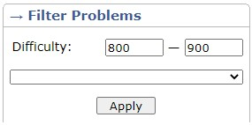
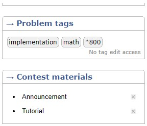
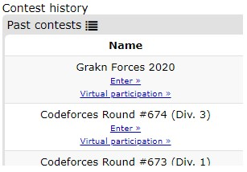

It’s a kind of sport (something like a game of chess) where we combine our problem solving skills with programming. There are several online sites where we can practice and compete about which we will discuss in later sections and there are several international contests hosted by tech giants like Google’s Code Jam, Kickstart, Facebook’s Hacker Cup and ACM ICPC.
First of all we need to learn the basic syntax of any language (Nexus highly recommends C++ because a lot of support and implementation of various algorithms are present on the internet, plus C++ is fast and there have been some situations where a logically same solution in java or python gets a TLE (Time Limit Exceeded) result while C++ gets a correct answer).
Get an idea about what time complexity, sorting and searching is, and solve some questions based on simple implementation and maths (Platform will be discussed in next step).
There are a lot of platforms for competitive programming but Nexus recommends you to participate in codeforces (for short contests and practice) and codechef (for long contests). A lot of people will advise you to begin from hackerrank but Nexus would suggest you to use it in a different manner and the reson for that is explained in “HOW TO PRACTICE” section.
Atcoder - the beginner contests held by this site are a brilliant way to increase your implementation typing speed.
Learn what standard template library (STL) is and its syntax. This step is most important for you to get a good rank in contests because in contests first two questions are generally based on STL/implementation/maths and if you can solve that in less than 10 to 20 minutes then you are already ahead of beginners. For learning STL we would suggest you to go through the syntax from sites like geeksforgeeks or there is an excellent video available on YouTube by Rachit Jain. Links for all the sites and tutorial mentioned here are in the “TUTORIALS” section and its okay if you can’t remember the syntax because nobody does in their first attempt that’s why should bookmark the STL implementations on your browser and after some practice you will be able to remember all the important and frequent ones.
Give contests!!! We say this with extra emphasis is because you can’t know your real time performance just by practicing questions as you will definitely perform differently under the pressure of time limit and ranks and we will suggest you to not take stress or demotivation from ranks and ratings during the initial phase of your journey because rating is just a parameter to show how well you will perform during a contest.
The way you practice defines the way you grow and it differs from person to person. We will link a spreadsheet made by Mostafa Saad, which describes two different ways of practice and has problems associated with them: one is solving topic wise problems while the other is solving difficulty wise random problems.
Strategy to practice, when you are a beginner: sort the problem set in codeforces according to difficulty rating in range 800-900.
And you should spend at least 15-20 minutes on a problem and if you are not able to solve the problem then you should take a look at the tutorial section which will contain its solution and explanation.
You should read its explanation and if it states something that you don’t know (say something like prefix sums) then you should learn about that first through various sites like geeksforgeeks or cp-algorithms (links in "TUTORIAL” section) or there are many handbooks available online like by Antti Laaksonen or by Halim and Halim and after learning the concept you should solve some problems related to that concept and after that implement that problem on your own and if you are unable to attempt then you should take a look at its code and implement it. If you are able to solve the problem in the first go then also you should take a look at the code submitted by some other coders as it might teach you some different approaches. When you feel comfortable in solving problems from a particular range you should increase its difficulty.
You should follow this till that range reaches 1100, after that we will change our approach. Now we will be giving at least 1 contest a week and 2 virtual contests (explained after a few lines) in a week. You should spend your whole allotted time into solving these problems; if you are not able to solve a problem then you should at least read that problem and think about it for 5-10 minutes and when the contest finishes you should UPSOLVE those problems that you were able to read after going through the tutorial which is usually released within 12 hours after contest finishes but now as the difficulty of the problems have been increased if you encounter any topic that you haven’t done before you should learn that from a site known as cp-algorithms. Now after learning the algorithm you must be able to implement that for that HackerRank comes into the picture as in competitive programming no one asks you to implement a regular algorithm rather they would ask you to implement its twisted form so to practice regular implementation you should definitely use hackerrank.
Codeforces and Atcoder gives you the experience of real time contests by giving you all the features of an unrated contest (like showing current standing and time elapsed) for a contest that has already occurred and you can use this feature to your benefit by following the practicing method described above.
Cp-algorithms : Contains tutorials of almost every algorithm that you will ever require in competitive programming
Geeksforgeeks : Contains variety of problems and tutorials
Rachit Jain(STL Tutorial) : Tutorial for STL
Gaurav Sen’s channel : Contains some nice tutorials
Codeforces EDU section : Relatively new but tutorials cover each and every type of standard problems for specific topics
Mostafa Saad spreadsheet : Blog contains spreadsheet containing various problems and practice approach
Errichto’s channel : Discuss different tricks and tips
SecondThread's channel : Contains screencast and solutions of recent codeforces round and some advanced tutorials
Handbook by Antti Laaksonen : Book containing various algorithms
Codeforces : An online judge where we can practice and compete
Codechef : An online judge where we can practice and compete
Google Contests : Contest hosting site for Google
Facebook Contests : Contest hosting site for Facebook
If you’ve been practicing at Codechef for a while and are now gradually moving toward medium/hard problems, many algorithms at these levels are very difficult to predict, you might be stuck at problems because you aren’t not aware of them. So here is a list of some of the most used algorithm for online programming contest that you can look up for reference.
Segment tree (with lazy propagation)
Interval Tree
Binary Indexed Tree
Heuristic Algorithms
KMP string searching
Manacher’s Algorithm
Union Find/Disjoint Set
Trie
Prime Miller Rabin
Stable Marriage Problem
Ternary Search
Fast Fourier Transform for fast polynomial multiplication
Djikstra’s algorithm, Bellman-ford algorithm, Floyd-Warshall Algorithm
Prim’s Algorithm, Kruskal’s Algorithm
RMQ, LCA
Flow related algorithms, assignment problem, Hungarian algorithm
Bipartite matching algorithms
Heavy-light decomposition
Sweep line algorithm
Z algorithm
Convex Hull
LCP
Suffix Tree
Gaussian Elimination
Numerical Integration/Differentiation
Line Clipping
Advanced Maths Ad-Hoc problems
Aho–Corasick string matching algorithm
Heavy Light decomposition in trees
Inverse Modulo operations
Pollard Rho Integer Factorization
Catalan Numbers